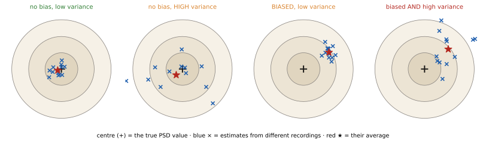
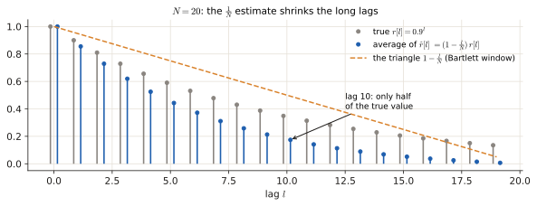
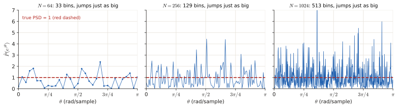
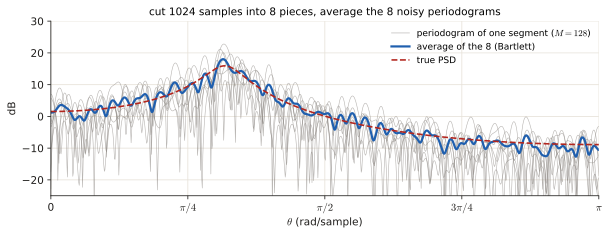
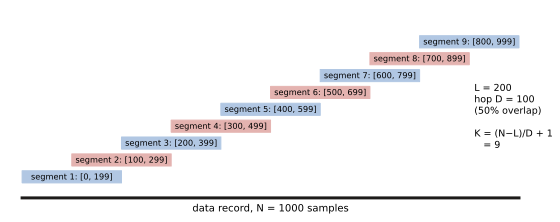
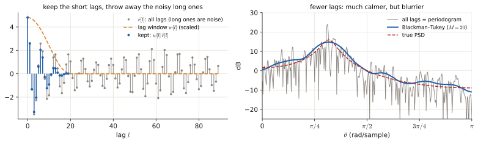
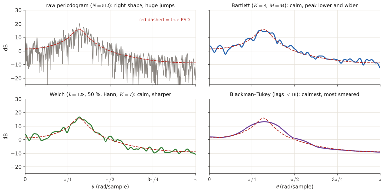

3.2 Non-parametric estimators: periodogram, correlogram, Bartlett, Welch, Blackman–Tukey#
Every exam has at least one theory question here, usually a multiple choice or a "match the statement to the method" table. It all comes down to one idea and one table. The idea: you only have a short noisy recording, so every spectrum you compute is a guess, and a guess can be wrong in two different ways (bias and variance). The table: what each method does to those two things. This page builds both from nothing.
Before this page
- What a signal and a sample are, \(x[n]\) (0.1)
- What a spectrum, the FTD, the DFT and a bin are (0.5)
- Random variable, mean, variance (0.6)
- Random signal, autocorrelation \(r[l]\), PSD (0.6)
- Windows, main lobe, side lobes, resolution, leakage (3.1)
If you read only one thing: the PSD says how the power of a random signal is spread over frequencies. You never see the true PSD; you see one noisy recording and compute an estimate.
1 · The problem: guessing a PSD from one recording#
1.1 What we want, in plain words#
A random signal (a microphone in a noisy room, say) is different every time you record it. What stays the same is its statistics, and one of them is the PSD \(P(e^{j\theta})\): "how much power sits at each frequency". It is defined from the autocorrelation (0.6):
(\(r[l]\) = how related the signal is to itself \(l\) steps later; \(\theta\) = frequency in radians per sample; the sum over all lags needs infinitely many numbers.)
You have \(N\) samples. So you can neither know \(r[l]\) exactly nor sum to infinity. You must build an estimator: a recipe that turns your \(N\) samples into a guess \(\hat P(e^{j\theta})\) (the hat means "estimate of").
1.2 Two ways a guess can be bad: bias and variance#
Think of throwing darts at a bullseye. The bullseye is the true PSD value at one frequency; every throw is one estimate from one fresh recording.
| Plain meaning | In darts | Formula | |
|---|---|---|---|
| Bias | wrong on average: systematic error | all darts land clustered, but off-centre | \(\text{bias}=\mathbb E[\hat P]-P\) |
| Variance | wrong by luck: jumps around from recording to recording | darts scattered all around | \(\operatorname{Var}[\hat P]=\mathbb E\big[(\hat P-\mathbb E[\hat P])^2\big]\) |
| Consistent | gets perfect as \(N\to\infty\) (bias → 0 and variance → 0) | with enough data, every dart hits the centre | |
| Asymptotically unbiased | bias → 0 as \(N\to\infty\) (nothing said about variance) |

Tiny numbers
True value \(P=4\). Five recordings give estimates \(3.1,\ 4.9,\ 1.2,\ 7.0,\ 3.8\). Their average is \(20/5=4.0\): no bias. But they spread between 1.2 and 7.0: huge variance. Another method gives \(5.1,\ 5.0,\ 4.9,\ 5.0,\ 5.0\): tiny variance but average 5.0, a bias of \(+1\). Averaging trades one for the other, and that is the whole story of this page.
1.3 Where the bias comes from#
Any estimate uses only \(N\) samples, which is the same as looking at the signal through a window (3.1 §2). A window smears the spectrum, so on average you see the true PSD smeared. Smearing is the bias; it costs resolution and gives leakage. Longer \(N\) → thinner main lobe → smaller bias.
2 · The two raw estimators#
2.1 Periodogram ("direct" method)#
Plain words. Take the DFT of your \(N\) samples, take the squared size of every bin, and divide by \(N\).
| Symbol | Meaning |
|---|---|
| \(N\) | number of samples you recorded |
| \(\sum_{n=0}^{N-1}x[n]e^{-jn\theta}\) | the FTD of your \(N\) samples = the DFT when \(\theta=2\pi k/N\) (0.5): "how much of frequency \(\theta\) is present" |
| \(\lvert\cdot\rvert^2\) | squared size: a power-like quantity, as in 3.1 §1 (energy = squares added) |
| \(\frac1N\) | energy over \(N\) samples divided by \(N\) = average power; without it the estimate would grow with the record length |
Tiny example: \(x=[1,1,1,1]\) (\(N=4\))
At \(\theta=0\) the DFT is \(1+1+1+1=4\), so \(\hat P(0)=\frac{4^2}{4}=4\). At the other three bins (\(\theta=\frac{2\pi}{4},\pi,\frac{3\pi}{2}\)) the DFT is exactly 0. Sanity check: the average of the periodogram over the 4 bins is \(\frac{4+0+0+0}{4}=1\), which is exactly the average power of the data, \(\frac{1^2+1^2+1^2+1^2}{4}=1\). (That is Parseval: the periodogram redistributes the same power over frequencies.)
2.2 Correlogram ("indirect" method)#
Plain words. Estimate the autocorrelation \(r[l]\) from the data, then plug it into the PSD definition (cut at the lags you can estimate).
First the estimate of \(r[l]\) (the usual "biased" one):
(Meaning: line the signal up against a copy of itself shifted by \(l\), multiply sample by sample, add, divide by \(N\). Only \(N-l\) products exist, but we still divide by \(N\).) Then
Tiny example: \(x=[1,2,3]\) (\(N=3\))
\(\hat r[0]=\frac{1+4+9}{3}=\frac{14}{3}\), \(\ \hat r[1]=\frac{2\cdot1+3\cdot2}{3}=\frac83\), \(\ \hat r[2]=\frac{3\cdot1}{3}=1\). At \(\theta=0\) (all cosines equal 1): \(\hat P_{cor}(0)=\frac{14}3+2\cdot\frac83+2\cdot1=\frac{14+16+6}{3}=12\). Periodogram at \(\theta=0\): \(\frac{(1+2+3)^2}{3}=\frac{36}{3}=12\). Same number.
That is not a coincidence: with the \(\frac1N\) ("biased") autocorrelation estimate, the periodogram and the correlogram are the same estimator (just computed in a different order). If you use the "unbiased" version (divide by \(N-l\)) the equivalence breaks, and the estimate can even go negative, which a power can never be.
2.3 Their bias#
Why is \(\hat r[l]\) called "biased"? Its average is \(\mathbb E[\hat r[l]]=\frac{N-l}{N}\,r[l]\) (there are \(N-l\) products, each with average \(r[l]\), divided by \(N\)). So every lag is shrunk by the factor \(\left(1-\frac{l}{N}\right)\): a triangle (the Bartlett window) multiplying \(r[l]\).
Example: \(N=100\) and lag \(l=50\): factor \(1-\frac{50}{100}=0.5\), the estimate sees only half of the true correlation. A multiplication by a triangle in lag = a smearing by the triangle's spectrum in frequency (the rule from 3.1 §2.2). So
giving some loss of resolution and some leakage, and both vanish as \(N\to\infty\) (the triangle becomes a thin spike). Therefore the raw estimators are asymptotically unbiased.

2.4 Their variance: the real problem#
Why, in words. At each frequency the periodogram is the squared size of one single random number (that DFT bin). A single random number does not average anything: its typical size is about its mean, so the spread of the estimate is about as big as the estimate itself. Doubling \(N\) gives you twice as many bins, not better bins. Each bin is still one random draw.
Example: if the true \(P=4\), the estimate has variance \(\approx16\), a standard deviation of about 4: errors as large as the value being estimated, for any \(N\).
So the raw estimators are not consistent: bias → 0 but variance does not → 0. All the other methods in this page exist to fix exactly this.

3 · The three fixes, and why they all cost bias#
3.1 The one trick: average several estimates#
If you have \(K\) independent estimates, each with variance \(V\), their average has variance \(V/K\). (Variances of independent things add, \(K\cdot V\); dividing by \(K\) divides the variance by \(K^2\); net \(V/K\), from the rules in 0.6.) Averaging \(K=9\) estimates cuts the variance to \(\frac19\approx0.11\) of the original.
Where do independent estimates come from, when you have a single recording? Cut the recording into segments and compute one periodogram per segment. The price: each segment is shorter (\(M\lt N\) samples), so each periodogram has a wider main lobe (resolution about \(2\pi/M\)), i.e. more bias. Fewer samples per estimate = blurrier estimate. Always the same trade:
The trade in one line
More, shorter pieces → lower variance, higher bias (worse resolution). Bartlett, Welch and Blackman–Tukey are three ways of making this trade.
3.2 Bartlett: average non-overlapping segments#
Cut the \(N\) samples into \(K\) non-overlapping pieces of length \(M=N/K\), take the periodogram of each, average. Since the pieces do not share samples, they are (nearly) independent, so

3.3 Welch (WOSA): overlapping, windowed segments#
Same idea, but the pieces overlap (typically 50 % to 75 %) and each is multiplied by a smooth window (Hann, Hamming…) before its periodogram. (WOSA = Weighted Overlapped Segment Averaging.)
- Overlap lets you fit more segments, or longer ones, from the same data → less bias than Bartlett for the same variance reduction.
- But overlapping segments share samples, so they are correlated, so averaging them helps less than \(1/K\). The variance still drops compared to the raw periodogram, and is larger than Bartlett's with the same \(K\).
Counting segments. Segment length \(L\), hop \(D\) (= how many samples you move forward each time = \(L\times(1-\text{overlap})\)), record length \(N\). Segments start at \(0,\ D,\ 2D,\dots\) and the last one must still fit: start \(\le N-L\). So

3.4 Blackman–Tukey: trust only the short lags#
The estimates \(\hat r[l]\) at large lags are built from very few products (\(N-l\) of them), so they are the noisiest; yet the correlogram adds them all in. Blackman–Tukey multiplies \(\hat r[l]\) by a lag window \(w[l]\) that is non-zero only for \(|l|\lt M\) with \(M\ll N\), then takes the FT. Throwing away the noisy long lags kills the variance, so the variance is
and the estimator is consistent. Cost: multiplying by a short \(w[l]\) in lag = smearing by a wide spectrum in frequency = more bias (the shorter \(M\), the more).

3.5 The table to memorise#
| Method | What it does | Bias | Variance |
|---|---|---|---|
| Periodogram / correlogram (raw) | \(\frac1N\lvert\text{DFT}\rvert^2\) / FT of \(\hat r[l]\) | asymptotically unbiased; resolution ≈ \(2\pi/N\) | \(\approx P^2\), not consistent |
| Bartlett | \(K\) non-overlapping segments (\(M=N/K\)), average the periodograms | increases (resolution ≈ \(2\pi/M\)) | \(\approx P^2/K\) |
| Welch / WOSA | overlapping (50–75 %), windowed segments, average | increases less than Bartlett | decreases, but not as \(1/K\) (correlated segments) |
| Blackman–Tukey | lag window of length \(2M-1\ll N\) on \(\hat r[l]\), then FT | increases as \(M\) shrinks | \(\approx\frac{P^2}{N}\sum w^2\) → 0: consistent |
| Parametric (AR/MA/ARMA) | fit a signal model, use its formula | small if the model fits | low; see 3.4 |

Phrases that decide multiple-choice questions
- "Zero padding" never reduces variance; Bartlett averages segments (3.1 §3).
- "Variance proportional to \(1/K\)" is Bartlett (independent segments), not Welch.
- The raw periodogram's problem is variance (\(\approx P^2\)), not bias; bias is a windowing effect that hits every signal, random or not.
- Welch's \(K\) with 50 % overlap is not \(N/L\): it is \(2N/L-1\).
Exam questions#
June 2026 resit · 3a#
Resit Q4, June 2026 · 3a · 0.25 p
Which of the following statements regarding the standard periodogram as an estimator of the Power Spectral Density (PSD) is TRUE?
- a) Increasing the length of the data window on which the periodogram is calculated decreases spectral leakage
- b) The periodogram is not a consistent estimator because its variance does not tend to zero as the data record length \(N \rightarrow \infty\).
- c) Applying a data window (e.g., a Hamming window) improves the frequency resolution (main lobe width) of the periodogram.
- d) Bartlett's method decreases the variance of the periodogram by zero-padding the original sequence.
Solution
What is being asked? Pick the one true statement about the raw periodogram. Check each against section 2.4 (variance) and 3.1 §2.4 (windows).
Step 1 — (a). A longer record narrows the main lobe (better resolution), but the side-lobe height of a rectangular window does not change, so leakage is not reduced. False.
Step 2 — (b). \(\operatorname{Var}\approx P^2\) whatever \(N\) is, so the variance does not tend to 0, so the estimator is not consistent. This is exactly section 2.4. True.
Step 3 — ©. A smooth window like Hamming widens the main lobe (worse resolution) and lowers the side lobes (less leakage). It improves leakage, not resolution. False.
Step 4 — (d). Bartlett reduces variance by averaging segments (3.2), not by zero padding. False.
Answer
(b)
June 2026 resit · 3b#
Resit Q4, June 2026 · 3b · 0.5 p
You are given a data record of \(N = 1000\) samples. You want to estimate the power spectral density using Welch's method to reduce the variance of your estimate. You choose a segment length of \(L = 200\) samples and an overlap of 50%.
Please provide only the final answer. The workout will not be checked.
- How many segments \(K\) will be averaged? [0.25]
- With the simplifying assumption that the segments are statistically independent, what is the ratio of the variance of your Welch estimate to the variance of a single standard periodogram of length \(L\)? [0.25]
Solution
What is being asked? (1) How many 200-sample pieces fit if each starts halfway into the previous one. (2) By what factor does averaging that many independent estimates shrink the variance.
Symbols in this question
| Symbol | Meaning |
|---|---|
| \(N=1000\) | samples in the whole record |
| \(L=200\) | samples in one segment |
| overlap 50 % | consecutive segments share half their samples |
| \(D\) | hop = how far the start moves each time |
| \(K\) | number of segments |
Step 1 — the hop. 50 % of \(L=200\) is shared, so the next segment starts \(D=200\cdot(1-0.5)=100\) samples later.
Step 2 — count the segments with the formula of 3.3: \(K=\frac{N-L}{D}+1=\frac{1000-200}{100}+1=8+1=9\). (Check with the figure: starts at \(0,100,\dots,800\) = 9 values; the last one ends at sample 999.)
Step 3 — the variance ratio. Averaging \(K\) independent estimates divides the variance by \(K\) (3.1), so the ratio is \(\frac1K=\frac19\approx0.111\).
Not 5 segments
\(N/L=1000/200=5\) is the Bartlett count (no overlap). With 50 % overlap you get \(2\cdot5-1=9\).
Answer
- \(K=9\) 2. \(\operatorname{Var}_{Welch}/\operatorname{Var}_{single}=1/9\approx0.11\)
April 2025 exam · 3b#
Final exam Q3, 13 April 2025 · 3b · 0.25 p
Which of the following statements on spectral estimation is TRUE?
- a) The problem of bias in the spectral estimate affects both deterministic and stochastic signals.
- b) Zero-padding prior to applying the discrete Fourier transform can improve the spectral resolution of the spectral estimate, i.e. the ability to distinguish spectral peaks.
- c) The "raw" periodogram achieves better performance in terms of bias, but worse in terms of variance compared to the "raw" correlogram.
- d) The type of window used to window the signal affects both the bias and the variance of the spectral estimate obtained using the "raw" periodogram.
Solution
What is being asked? One true statement. Each one is a claim about where bias and variance come from (section 1.2, 1.3).
Step 1 — (a). Bias comes from looking through a finite window, and every recording is windowed, deterministic or random (1.3). Random signals have the extra problem of variance on top. True.
Step 2 — (b). Zero padding only interpolates the same curve (3.1 §3.3). False.
Step 3 — ©. With the biased \(\hat r\) the raw periodogram and the raw correlogram are the same estimator (2.2, the \([1,2,3]\) example gives 12 in both). Same bias, same variance. False.
Step 4 — (d). The window shape changes the main-lobe/side-lobe shape, i.e. the bias. The variance of the raw periodogram stays \(\approx P^2\) (2.4). False.
Answer
(a)
April 2025 exam · 3c#
Final exam Q3, 13 April 2025 · 3c · 0.5 p
In the table below, fill in to which power spectral density (PSD) estimator each statement is referring. Note: only one answer is correct for each statement.
| Statement | PSD-estimator |
|---|---|
| 1. PSD is estimated by dividing the total signal length in different non-overlapping segments, and averaging the periodograms obtained on each segement. | |
| 2. PSD is estimated by calculating the modulus squared of the N-point DFT of the random signal, and dividing by the signal length N. | |
| 3. PSD is estimated by using a model of the form \(P(e^{j\theta}) = \sigma_i^2 \left\lvert \frac{1 + \sum_q b_q e^{-jq\theta}}{1 + \sum_p a_p e^{-jp\theta}} \right\rvert^2\) | |
| 4. PSD is estimated by calculating the L-point DFT of the estimated autocorrelation function of the signal (L=number of lags), after applying a window of length M<L to the autocorrelation function. | |
| 5. PSD is estimated by dividing the total signal length in different overlapping segments, and averaging the periodograms obtained on each segment. |
Solution
What is being asked? Match each description to one method. Each description contains a keyword that identifies it:
| # | Keyword in the statement | Method | Why |
|---|---|---|---|
| 1 | non-overlapping segments, averaged | Bartlett | 3.2 |
| 2 | modulus squared of the DFT divided by \(N\) | Periodogram | the formula of 2.1 |
| 3 | a ratio of two polynomials in \(e^{-j\theta}\) (a model) | ARMA (parametric) | numerator \(b_q\) = MA part, denominator \(a_p\) = AR part (3.4) |
| 4 | window on the autocorrelation (\(M\lt L\)), then FT | Blackman–Tukey | 3.4 |
| 5 | overlapping segments, averaged | Welch (WOSA) | 3.3 |
Answer
1 Bartlett · 2 Periodogram · 3 ARMA (parametric) model · 4 Blackman–Tukey · 5 Welch (WOSA)
April 2024 exam · 3a#
Final exam Q3, April 2024 · 3a · 0.9 p
Indicate which spectral estimation method(s) fit each of the following description. Multiple answer are possible, and answer can be repeated. If multiple answers are possible, please indicate them all.
| Description | Method(s) | |
|---|---|---|
| 1 | Estimates the power spectral density by modeling the random signal as a linear random signal model. | |
| 2 | Divides the signal into segments, allowing overlap between the segments. | |
| 3 | Is a consistent estimator of the power spectral density. | |
| 4 | Estimates the power spectrum as the Fourier transform of the autocorrelation function. | |
| 5 | The bias of the power spectral density estimate is proportional to the square of the true spectrum. | |
| 6 | Averages multiple periodogram estimates. |
Solution
What is being asked? For each row, list every method it describes. No official key exists for this paper; the reasoning is from the table in 3.5.
Step 1 — row 1. "A linear random signal model" = AR, MA, ARMA: the parametric methods.
Step 2 — row 2. Overlap → Welch (WOSA) only; Bartlett's segments do not overlap.
Step 3 — row 3. Consistent = variance → 0. The reader calls Blackman–Tukey consistent (3.4). Bartlett and Welch also have variance → 0 if the number of segments grows with \(N\), so listing them is defensible. The raw periodogram/correlogram are not consistent (2.4).
Step 4 — row 4. The FT of the autocorrelation → correlogram and Blackman–Tukey (a windowed correlogram).
Step 5 — row 5. Careful: what is proportional to \(P^2\) is the variance of the raw periodogram/correlogram, not the bias. As printed no method fits; if "variance" was meant: periodogram and correlogram.
Step 6 — row 6. Averaging periodograms → Bartlett and Welch.
Answer
1 AR/MA/ARMA · 2 Welch · 3 Blackman–Tukey (+ Bartlett, Welch with \(K\to\infty\)) · 4 correlogram, Blackman–Tukey · 5 none as written (variance ∝ \(P^2\) for periodogram/correlogram) · 6 Bartlett, Welch
November 2022 exam · 3a#
Final exam Q1, 7 November 2022 · 3a · 0.25 p
In the context of non-parametric spectral estimation, which of the following statements is TRUE?
- a) Compared to the periodogram, the Bartlett method with K segments allows a reduction of the variance of the estimated spectrum proportional to 1/K. However, the bias increases.
- b) Compared to the periodogram, the WOSA method with K segments allows a reduction of the variance of the estimated spectrum proportional to 1/K. However, the bias increases.
- c) Compared to the periodogram, the Bartlett method with K segments allows a reduction of the variance of the estimated spectrum proportional to 1/K. The bias also decreases, but not proportionally to 1/K.
- d) Compared to the periodogram, the WOSA method with K segments allows a reduction of the variance of the estimated spectrum proportional to 1/K. The bias also decreases, but not proportionally to 1/K.
Solution
What is being asked? Two switches: Bartlett or WOSA? Bias up or down?
Step 1 — Bartlett or WOSA? "Proportional to \(1/K\)" needs independent segments, i.e. Bartlett (3.2). WOSA's overlapping segments are correlated (3.3). This removes (b) and (d).
Step 2 — bias up or down? Segments are shorter than the full record (\(M=N/K\)), so the main lobe is wider and the bias increases (3.1). This removes ©.
Answer
(a)
January 2020 retake · 1b#
Retake exam, 20 January 2020 · Exercise 1(b) · 0.25 p
Select the correct answer regarding the Welch's method for non-parametric spectral estimation, also known as WOSA:
- A. It consists of averaging \(K\) different periodograms, obtained from \(K\) segments of the observed random signal, not allowing overlap between the segments. The variance is lower than the periodogram, proportionally to \(1/K\).
- B. It consists of averaging \(K\) different periodograms, obtained from \(K\) segments of the observed random signal, allowing overlap between the segments. The variance is lower than Bartlett's method, but not proportionally to \(1/K\).
- C. It consists of averaging \(K\) different periodograms, obtained from \(K\) segments of the observed random signal, not allowing overlap between the segments. The variance is larger than Bartlett's method, but lower than the periodogram.
- D. It consists of averaging \(K\) different periodograms, obtained from \(K\) segments of the observed random signal, allowing overlap between the segments. The variance is larger than Bartlett's method, but lower than the periodogram.
Solution
What is being asked? Which description is Welch, with the right comparison of variances.
Step 1 — overlap. Welch allows overlap, so A and C (which say "not allowing overlap") are out.
Step 2 — the variance. For the same \(K\), overlapping segments are correlated, so averaging helps less than Bartlett's \(1/K\): the Welch variance is larger than Bartlett's but still lower than the raw periodogram (3.3). B says "lower than Bartlett's", which is backwards. D says it right.
Answer
D
November 2019 exam · 1c#
Written exam, 4 November 2019 · Exercise 1© · 1.5 p
Complete Table 2, which provides an overview of non-parametric spectral estimation methods. Answers can be descriptive. In other words, formulas are not necessary. Please use the template table in the answer sheet and limit your answers to the assigned space in each entry of the table.
| Description (basic idea) | Bias | Variance | |
|---|---|---|---|
| Periodogram | |||
| Correlogram | |||
| Bartlett's periodogram | |||
| WOSA | |||
| Blackman-Tukey |
Solution
What is being asked? Fill the 5 × 3 table of 3.5 from memory. The official key only filled the periodogram row; the full table follows.
| Description | Bias | Variance | |
|---|---|---|---|
| Periodogram | \(\frac1N\lvert\text{FT of the data}\rvert^2\) | FT of the biased \(\hat r\): smoothed by a triangular window; asymptotically unbiased | ∝ \(P^2\); does not decrease with \(N\) (not consistent) |
| Correlogram | FT of the estimated autocorrelation (lags up to \(N-1\)) | same as periodogram (equivalent with biased \(\hat r\); the unbiased \(\hat r\) can give negative PSD) | ∝ \(P^2\), not consistent |
| Bartlett | average \(K\) periodograms of non-overlapping segments of length \(M=N/K\) | larger (resolution \(\approx2\pi/M\)) | ≈ \(P^2/K\) |
| WOSA (Welch) | average periodograms of overlapping, windowed segments | larger than raw, but less than Bartlett (longer segments) | reduced, but not as \(1/K\) (correlated segments) |
| Blackman–Tukey | window \(\hat r[l]\) with a short lag window (\(M\ll N\)), then FT | larger for shorter \(M\) (convolution with the window spectrum) | ≈ \(\frac{P^2}{N}\sum w^2[l]\) → 0: consistent |
January 2019 retake · 1c#
Written exam, 21 January 2019 · Exercise 1© · 0.5 p (1 or 2 answers correct)
In the context of non-parametric spectral estimation methods, which ones of the following statements are true?
- A. In Bartlett's method, the bias of the estimated power spectrum increases as the length of the window \(M\) of each raw periodogram decreases.
- B. In Welch's periodogram with overlap of 50%, the variance of the power spectrum estimate decreases as \(1/K\), with \(K\) equal to the number of raw periodogram estimates.
- C. The Blackman-Tukey correlogram is a consistent estimator of the power spectrum.
- D. In general, zero-padding increases spectral resolution.
Solution
What is being asked? Mark every true statement (one or two are).
| Verdict | Reason | |
|---|---|---|
| A | true | shorter segment \(M\) → wider main lobe → more bias (3.1) |
| B | false | overlapping segments are correlated, so no exact \(1/K\) (3.3) |
| C | true | variance → 0 (3.4) |
| D | false | zero padding only interpolates (3.1 §3) |
Answer
A and C